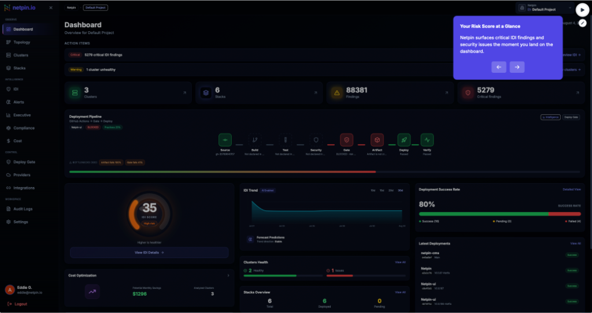
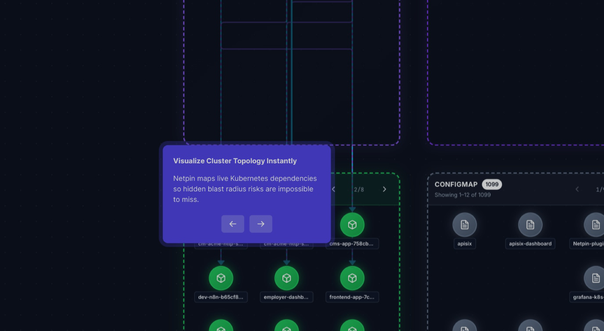
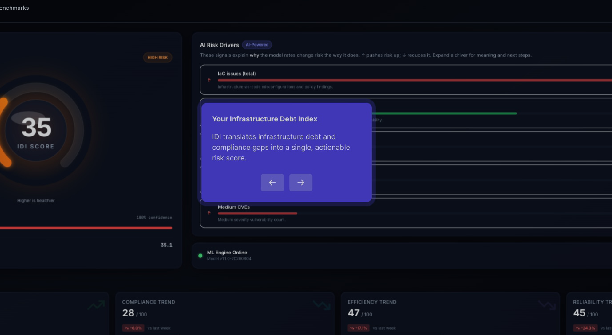
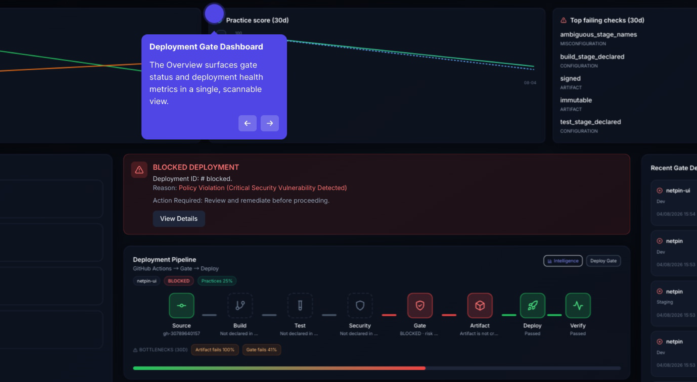
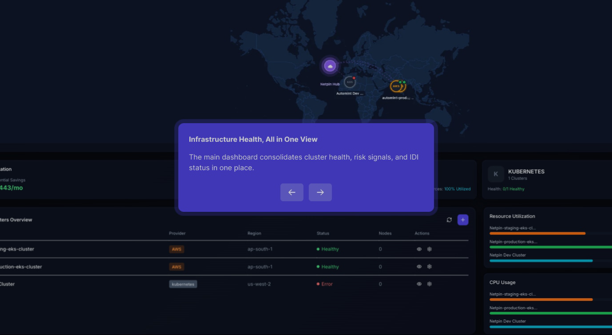
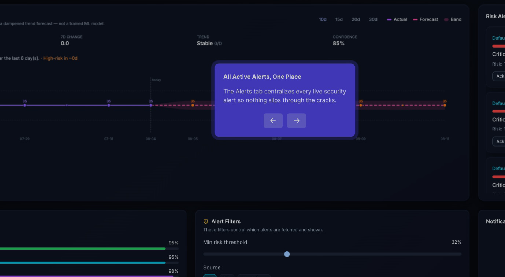

Stop firefighting blind. Netpin brings structure to complex infrastructure, measuring your Technical Debt through IDI. Gain predictive alerts and enforce deployment gates.

From real-time topology visualization to predictive analytics, Netpin gives you complete visibility into your Kubernetes infrastructure.
Our proprietary IDI score quantifies technical debt across security, compliance, efficiency, and reliability — giving you a single number to track infrastructure health.
AI-powered forecasting predicts where your IDI will be in 7, 14, and 30 days — so you can address issues before they become critical.
Interactive maps show all your Kubernetes resources and their relationships. Understand dependencies at a glance.
Automatically block risky deployments based on IDI thresholds. Integrate with your CI/CD pipeline for intelligent release control.
Connect clusters from AWS EKS, Google GKE, Azure AKS, or any on-premises Kubernetes environment. One platform for everything.
Our read-only agent collects data without impacting performance. Deploy in seconds with a single kubectl command.
Understand the complete picture of your Kubernetes environment with interactive topology maps. Instantly identify dependencies, bottlenecks, and single points of failure.
Automatically discover and visualize relationships between pods, services, and deployments
Color-coded nodes show healthy (green), warning (yellow), and critical (red) resources
Understand blast radius before making changes — know what depends on what

Stop guessing about infrastructure health. The IDI score gives you a single, actionable metric that quantifies technical debt across four critical dimensions.
Vulnerabilities, exposed secrets, RBAC issues, and security best practices
CIS benchmarks, pod security policies, and regulatory requirements
Resource utilization, right-sizing recommendations, and cost optimization
High availability, disaster recovery, and resilience patterns

Integrate intelligent deployment gates into your CI/CD pipeline. Automatically block releases when infrastructure conditions indicate high risk.
Set thresholds for Security, Compliance, Efficiency, and Reliability scores
Native integrations with GitHub Actions, GitLab CI, Jenkins, and ArgoCD
Define custom policies with code coverage, vulnerability thresholds, and more

Whether you're running AWS EKS, Google GKE, Azure AKS, or on-premise Kubernetes, Netpin gives you unified visibility across your entire infrastructure.
Connect AWS, GCP, Azure, and on-premise clusters in a single pane of glass
See all your clusters on a world map with regional performance insights
Cross-cloud cost analysis with right-sizing and savings recommendations

Our machine learning models analyze trends and patterns to predict where your IDI score will be in 7, 14, and 30 days — so you can fix issues proactively.
Predict future infrastructure health with 94%+ accuracy ML models
Get notified about predicted issues before they impact production
Integrate with Slack, PagerDuty, and email for contextual alerts

Get started with Netpin in four simple steps. No complex configurations required.
Add your AWS, GCP, or Azure credentials. We'll automatically discover all your clusters.
One kubectl command deploys our lightweight, read-only agent to your clusters.
Within minutes, see your Infrastructure Debt Index and actionable findings.
Use insights to prioritize fixes and gate deployments based on risk.
The Infrastructure Debt Index (IDI) is our proprietary scoring system that quantifies technical debt across four critical dimensions. Track it daily to ensure your infrastructure stays healthy.
See what engineering leaders are saying about Netpin.
"Netpin's IDI score gave our team a common language for infrastructure health. We reduced incidents by 60% in the first quarter."
"The deployment gating feature alone is worth it. We stopped three potentially catastrophic releases before they hit production."
"Finally, a tool that gives us visibility across all our clusters. The topology visualization saved us hours of debugging time."
Start free, scale as you grow. No hidden fees.
For small teams getting started
For growing teams
For large organizations
Join thousands of DevOps teams who trust Netpin to keep their infrastructure healthy and their deployments safe.